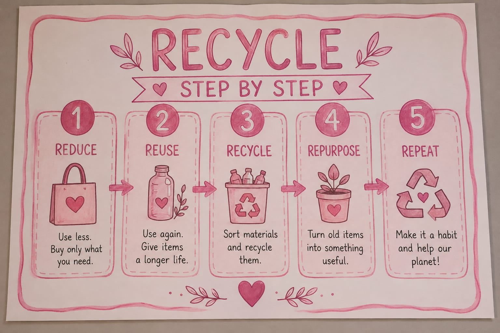

SAVE PAPER • SAVE OUR PLANET
Every Sheet Matters.
Paper waste is one of the environmental challenges we face every day. Small changes in our habits can create a cleaner and greener future.
Reduce
Reuse • Recycle • Protect
SAVE PAPER • SAVE OUR PLANET
Paper waste is one of the environmental challenges we face every day. Small changes in our habits can create a cleaner and greener future.
Reuse • Recycle • Protect
of waste in offices can be paper.
Reduce, Reuse & Recycle.
Can produce thousands of sheets.
Small actions can make a difference.
THE PROBLEM
Producing paper requires trees. Excessive paper consumption increases pressure on forests.
Paper production uses large amounts of water during manufacturing and processing.
Manufacturing, transporting and recycling paper requires energy and resources.
Unused paper often ends up in landfills instead of being reused or recycled.
OUR SOLUTION
Reducing paper waste does not require huge changes. Simple daily habits can significantly reduce the amount of paper we throw away.
Print Less
Think before printing documents.
Reuse Paper
Use blank sides of paper for draft notes.
Recycle Properly
Separate paper waste from other garbage.
— Howard Zinn
LEARN HOW

Use digital notes, e-books, and online documents instead of printing on paper whenever possible.
Always set your printer to print on both sides of the paper to cut usage in half instantly.
Keep a box for paper that has one clean side left and use it for quick notes, sketches, or reminders.
Place a dedicated paper recycling bin next to your desk or printer to make sorting effortless.
Start today by adopting simple paper-saving habits.
Back to Top